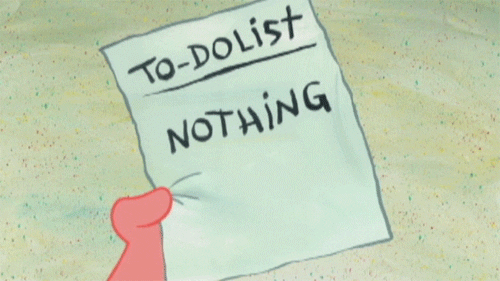

Estratégia para aprender inglês
Ou qualquer outra lingua

Fala tudo tranquilo? Escrevi esse pequeno guia com as minhas melhores estratégias internas e práticas para desembolar suas havilidades com línguas 👅
É muito importante lembrar que aprender linguas é um processo estranho e não muito linear como os "cursos de inglês e afins costumam encaixotar". As vezes você vai aprender mais fazendo menos e vice versa. Fontes de entretenimento e ambientação também entram nessa equação e de uma maneira doida (cientificamente comprovada) porém imprescindível no longo prazo.
Quebrando padrões
e consequentemente saindo da matrix

Antes de começar só gostaria de deixar bem claro que esse sistema de estudo não faz o menor sentido na lógica "padrão" que provavelmente você já tenha visto. Aprender lingua é simples porém não é fácil, e o principal: leva tempo. Essa história de aprenda a falar em 1 mês existe mas te transforma num chatbot (rsrsrsrs). Tenho certeza que não é isso que você quer então vamos ao que interessa.
Pra poder falar uma nova língua você vai precisar de passar por esses processos aqui:
- Ouvir
- Acostumar com os sons
- Começar a identificar os sons
- Construir um vocabulário
- Aprender os padrões da lingua
- Falar
Esses processos acima são conquistados com a união de ações ativas e passovas (uiuiui poderosa 💃). Tudo que for ativo você precisa estar de fato concentrado e focado na ação e consequentemente tudo que for passivo você simplesmente deixa o pau quebrar.
Meu guia
Minha estratégia inteira numa super lista
Porque ninguém tem tempo pra ficar digitando tudo nos mínimos detalhes (já são 00:41 e quero dormir)
- Construa um ambiente de imersão e fique imerso o máximo de tempo que for possível
- Utilize sua imaginação e tente migrar todos as suas interações pra inglês. Acesse sites em inglês, ouça músicas, deixe podcasts rodando, assista programas e videos em inglês, troque a lingua do telefone, etc...
- Mesmo que não esteja prestando atenção é importante criar um ambiente de intercâmbio, simulando como se você estivesse num país de lingua inglesa.
- Você não vai entender nada por um bom tempo mas isso faz parte do processo confia no pai
- Baixe o AnkiDroid no celular
- Nele você vai adicionar um baralho de vocabulário básico e fazer as revisões diárias (clique aqui se precisar de ajuda com isso ). Provavelmente você vai gastar uns 30min todo dia com essa parada mas não precisa ser numa sentada, 3 de 10min já resolve esse B.O
- Diariamente o app vai fazer a gestão da sua curva de esquecimento então provavelmente você vai ver alguns cartões repetidos e outros vão sumir da sua vista... é um sistema muito confiável.
- Todo momento é o certo pra poder estar ouvindo ou tentando assistir algo em inglês. Sejá pra tentar reconhecer alguma palavra familiar que você tenha ouvido no AnkiDroid ou apenas pra continuar treinando o cérebro passivamente.
- Quando tiver um bom vocabulário mude para frases.
- Até esse momento você não pronunciou nenhuma palavra em inglês.... acredite o ouvido interno vem primeiro. Enquanto você não estiver acostumado com o som, rítmo e trejeitos da lingua nem adianta querer falar "the book is on the table"
- Última e mais importante, tente consumir coisas do seu interesse sempre pois não tem nada mais entendiante do que estudar a lingua com coisas não nos interessa. Tente achar entrevistas, reportagens, músicas, podcasts, de tópicos que fazem seu olho brilhar.... caso contrário vai ser um inferno.